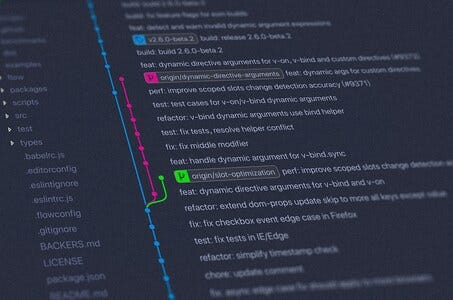

When I was a teenager I believed laptops were the best and only way to use a computer.
They are portable and well, they were portable.
That's it, I thought that was enough.
"Tower PCs are for boomers anyway" was my thought.
Problem was, the hardware for laptops was really expensive and I wanted to play the latest video games.
After a few years of only using a laptop I relented for The Elder Scrolls & PS2 Emulators.
I got my first higher end tower PC with one monitor.
I discovered it was rather cheap and extremely effective at doing, well, pretty much everything.
Though I was confined to my dormitory, I rather enjoyed the speed, large 27" monitor and feeling of a solid keyboard and mouse.
Tower PCs Last Longer...
I would end up using that tower PC for the next 10 years.
Even when my PC was becoming senile with old age I still found its slowness superior to a laptops.
As I was starting graduate school my family decided to help me out and grant me a modern high end tower with two monitors (I asked for it...)
I am telling you, without this tower I would not have made it through my Masters of Computer Science program.
All the other students were using laptops and me, with this tower, had a clear advantage.
Through tutoring other students I could see my homework completion speed, code implementation speed and workflow were much more efficient.
Photo by Jeshoots
I would be given homework assignments and finish them within 4 hours while my peers were still setting up Google Collab.
I would be asked in a tutoring session to help them set it up.
Why Two Monitors Are So Good
In one of these tutoring sessions one girl was reading documentation into PyTorch, I could see her switching browsers & tabs.
She was trying to read documentation & her code in Google Collab at the same time.
The small confines of her laptop screen did not allow her to split the screen in two effectively.
Essentially her productivity was cut in half and she would have to memorize the differences between the documentation and her IDE.
I could tell her problem was not a skill issue but an accessibility issue.
This type of thing was commonplace in university.
Photo by Scott Graham
Whenever I got online to help someone in class I rolled my eyes as I saw a good number of them struggling on a laptop.
Other students who I saw had a solid two monitor gaming tower, though I only tutored two with towers, needed way less guidance and had higher grades.
Today, out of school, most software engineers I interact with have discovered this necessity.
From their crisp and clean code, they look like they know what they are doing. When we video chat it is clear they are on a workstation/tower.
Solid Positioning Is Superior to Loose Positioning
There is something to be said about the solid positioning of a mouse, keyboard & two or three monitors.
There is an ocular (eye ball) to muscle relationship that happens when everything is in the same place, every time.
As we move a laptop it seems this relationship is broken.
A certain stress is put on the user without this relationship.
My best friend Manu used a laptop all his life.
For years I told him he needed a tower PC. "I am not a PC wizard like you Jesse, I am not good at computers."
This is the common saying amongst people who have never tried a real workstation.
One day, his brother decided to buy Manu a great gift.
A tower PC with two 27" monitors with better hardware than my PC!
Guess what happened to Manu?
He got addicted. At first he was mostly playing video games on it.
But as he was using the PC, at the age of 26 he found he had a natural aptitude behind all that loose workflow.
"Dude you were right" he said. "Yup yup Manu, everyone struggles with a laptop, especially coders."
Photo by Maxim Tolchinskiy
Manu responded, "yea 3D modelers too".
For 4 years he did 3D modeling on a laptop.
And it seems obvious when stating this but he told me the muscle to eye relationship of his tower PC was vastly superior.
He was finally able to use his artistic skill to a higher degree.
It Is Way Easier to Read Large Code Sources
A humongous code base, in my opinion, is impossible to understand on a dinky laptop.
I am sure you can try and possibly (though not likely) succeed.
I see some coders try this and somewhat succeed.
But to me they always seem constrained by a lack of muscle to eye connection, a lack of ability to see two monitors and their slower hardware.
Photo by Yancy Min
The main reason they succeed in putting in a bunch of commits (lines of code) is because they believe they have the best setup.
Soon, more often than not, they burn out of this success. Other, more productive developers, seem to eclipse them in their eyes.
I have heard this multiple times, "I am not a very talented coder."
What they don't know is, most tools and workflows applicable to large code sources require a tower PC with two monitors.
Check out my article on reading large code sources. The majority of actionable tips in that article are only possible on a workstation.
A Cheap Laptop Is Still a Good Idea
During graduate school I discovered all classes were at night.
They were trying to respect the other student's 9-5 jobs.
For years I always just rented a laptop from the library.
But now, at night, the library was closed.
I needed a laptop, but I just needed it for notes and search engine look ups.
Photo by WebFactory
I bought a Dell $280 laptop with great specifications.
The laptop could not handle say Jetbrains but was enough for small IDEs and note taking apps.
It was amazing, I had no idea what I was missing.
I took the laptop to my family's house, school, MeetUps and café locations.
Though I am nowhere near productive on a laptop, it is great fun.
I discovered the only way to code and be productive on a cheap laptop is to use a remote hosting service to connect to my tower PC at home.
I never code without being on my tower.
I can't really code without the internet anyway.
Using Teamviewer/Anydesk into a tower PC is a great way to boost productivity on a cheap laptop.
Anywho, I hope you learned something...
Happy coding!
Resources
Teamviewer: https://www.teamviewer.com/
AnyDesk: https://anydesk.com/
How to read large code sources: How to Learn a Large Code Source Efficiently and Effectively